if (!require('cowplot')) install.packages('cowplot'); library('cowplot')
if (!require('dplyr')) install.packages('dplyr'); library('dplyr')
if (!require('esquisse')) install.packages('esquisse'); library('esquisse')
if (!require('gapminder')) install.packages('gapminder'); library('gapminder')
if (!require('geomtextpath')) install.packages('geomtextpath'); library('geomtextpath')
if (!require('gghighlight')) install.packages('gghighlight'); library('gghighlight')
if (!require('ggplot2')) install.packages('ggplot2'); library('ggplot2')
if (!require('ggrain')) install.packages('ggrain'); library('ggrain')
if (!require('ggthemes')) install.packages('ggthemes'); library('ggthemes')
if (!require('ggridges')) install.packages('ggridges'); library('ggridges')
if (!require('knitr')) install.packages('knitr'); library('knitr')
if (!require('plotly')) install.packages('plotly'); library('plotly')
if (!require('purrr')) install.packages('purrr'); library('purrr')
if (!require('readr')) install.packages('readr'); library('readr')
if (!require('sjPlot')) install.packages('sjPlot'); library('sjPlot')
if (!require('tidyr')) install.packages('tidyr'); library('tidyr')2 Introducción a la visualización de datos
Paquetes para este capítulo
Para poder ejecutar en tu ordenador el código de los ejemplos y ejercicios de este capítulo vas a necesitar los paquetes del recuadro siguiente.
Cuando empecemos cada capítulo:
Abre un script de R y guárdalo con el nombre del capítulo:
capitulo2.RCopia las líneas de abajo (click en el icono del cuadro gris de abajo) y pégalas en el script
Ejecútalas: CNTRL + ENTER para ejecutar linea a linea, o CNTRL + ALT + R para ejecutar todo
2.1 R para visualización de datos
ggplot2 es el paquete por excelencia para visualización de datos. Su potencia va asociada a un nivel de complejidad considerable, hasta el punto que hay Cheat sheets oficiales, Cheat sheets buscables, y decenas de miles de preguntas en Stack Overflow.
2.1.1 Primeros pasos - con training wheels
Para empezar a trabajar con ggplot sin tener que preocuparnos de su complejidad, podemos usar la función esquisse:::esquisser() del paquete esquisse. Esta nos permite usar la potencia de ggplot para explorar una base de datos de manera muy sencilla.

La manera fácil (1, 2, 3), usando esquisse:
# 1) Asegúrate que hemos instalado el paquete esquisse
if (!require('esquisse')) install.packages('esquisse'); library('esquisse')
# 2) Lanza el wizard esquisser
esquisse:::esquisser(iris)
# 3) Crea el gráfico que quieras, exporta el código...2.1.2 Aprendamos con Garrick
Garrick Aden-Buie ( @grrrck) ha creado una excelente introducción a ggplot2 y la gramática de gráficos. Os recomiendo revisarla para familiarizaros con las funcionalidades de ggplot.
2.2 Visualización de datos con ggplot2
2.2.1 Componentes de una gráfica
En esta sección vamos a ver algunos de los componentes que usaremos cuando visualicemos datos. Muchos de los ejemplos que usaremos vienen de R for data science.
Ingredientes esenciales de una gráfica
- Aesthetic mappings (aes): Variables, colores, rellenos, formas, …
- Geoms (geom_): puntos, líneas, boxplots, …
- Facets (facet_): paneles con diferentes gráficos para cada nivel de una variable categórica, …
- Transformaciones estadísticas: calcular promedios, barras de error, …

2.2.2 Mi primera gráfica en A-B-C
Para crear una gráfica con ggplot, tenemos que:
- indicar donde están nuestros datos y que mostraremos en los ejes
xey
- añadir la o las geometrías (
geoms) que queramos
Usaremos + para sumar instrucciones, con una lógica de capas superpuestas.
Por ejemplo:
Indicamos los datos y coordenadas:
ggplot(data = mpg, aes(x = displ, y = hwy))Añadimos el
geomde puntos para mostrar la relación entre x e y:+ geom_point()Añadimos un segundo
geompara trazar una línea de tendencia:+ geom_smooth()
El código de la gráfica final sería el siguiente. Si respetamos el orden de las variables, podemos simplificar nuestro código, evitando el data =, x = e y =:
# Los datos están en mpg. Queremos ver la relación entre las variables `displ` y `hwy`
# Usamos geom_point para mostrar puntos
# Usamos geom_smooth para dibujar linea de tendencia
ggplot(mpg, aes(displ, hwy)) +
geom_point() +
geom_smooth()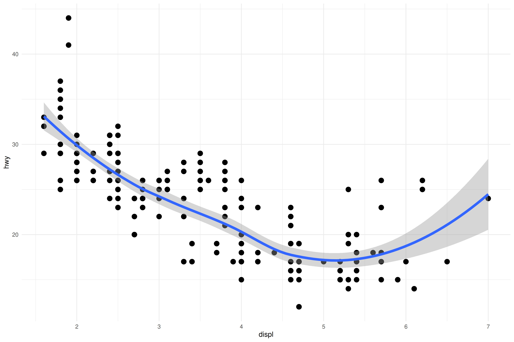
2.2.3 Aesthetic mappings
En aes() vamos a indicar las variables que queremos en los ejes x e y, el color de los puntos o líneas, el relleno de las barras, la forma de los puntos, el tipo de linea, la agrupación de los datos, etc.
Parámetros estéticos
- x: x = gdpPercap
- y: y = lifeExp
- color: color = continent; color = “red”; color = “#FAA627”
- fill: fill = continent; fill = “red”; fill = “#FAA627”
- alpha: alpha = continent; alpha = 0.2
- size: size = continent; size = 5
- shape: shape = continent; shape = 0 ver codigo de las distintas formas
- linetype: linetype = continent; linetype = “dashed”
- group: group = continent
Veamos algunos de los parámetros…
2.2.3.1 x-y
Algo esencial es decirle a ggplot qué queremos mostrar en los ejes x e y de nuestra gráfica.
Empezaremos usando los datos de gapminder Vamos a ver qué variables tenemos en el data frame:
Error: object ‘gapminder’ not found
Si te aparece el error: Error: object 'gapminder' not found, asegurate de hacer los pasos indicados en el recuadro Paquetes para este capítulo arriba.
gapminder
#> # A tibble: 1,704 × 6
#> country continent year lifeExp pop gdpPercap
#> <fct> <fct> <int> <dbl> <int> <dbl>
#> 1 Afghanistan Asia 1952 28.8 8425333 779.
#> 2 Afghanistan Asia 1957 30.3 9240934 821.
#> 3 Afghanistan Asia 1962 32.0 10267083 853.
#> 4 Afghanistan Asia 1967 34.0 11537966 836.
#> 5 Afghanistan Asia 1972 36.1 13079460 740.
#> 6 Afghanistan Asia 1977 38.4 14880372 786.
#> # ℹ 1,698 more rowsVisualizamos la relación entre gdpPercap (eje x), y lifeExp (eje y):
ggplot(gapminder, aes(gdpPercap, lifeExp)) +
geom_point()
Dentro de aes(), el primer parámetro se refiere al eje x y el segundo al eje y. Si cambiamos el orden del código de arriba, podemos ver de nuevo la relación entre lifeExp y gdpPercap, con los ejes invertidos.
ggplot(gapminder, aes(lifeExp, gdpPercap)) +
geom_point()Ejercicio
Usando gapminder, ¿podrías crear un gráfico de gdp per cápita por población como éste?
Solución
dentro de aes() tenemos que poner gdpPercap y pop
2.2.3.2 Color, alpha, size
Para asignar colores podemos usar nombres de colores en inglés, o algo llamado código HEX:
Escribe
colors()en la Consola de RStudio (aparecerá un listado con > 600 colores)
Empecemos a cambiar parámetros de nuestro gráfico inicial:
# Gráfico inicial
ggplot(gapminder, aes(gdpPercap, lifeExp)) +
geom_point()Color “rojo” para los puntos con color = "red".
ggplot(gapminder, aes(gdpPercap, lifeExp)) +
geom_point(color = "red")Color en función de la variable ‘continent’. Al usar un nombre de variable, tenemos que ponerlo dentro de aes().
Error: object ‘continent’ not found
continent es una columna de gapminder, no un color. Siempre que usemos nombres de variables, tienen que estar dentro de aes()
ggplot(gapminder, aes(gdpPercap, lifeExp, color = continent)) +
geom_point()Color en función de la variable ‘continent’. Cambiamos el tamaño de los puntos a 2.
ggplot(gapminder, aes(gdpPercap, lifeExp, color = continent, size = 2)) +
geom_point()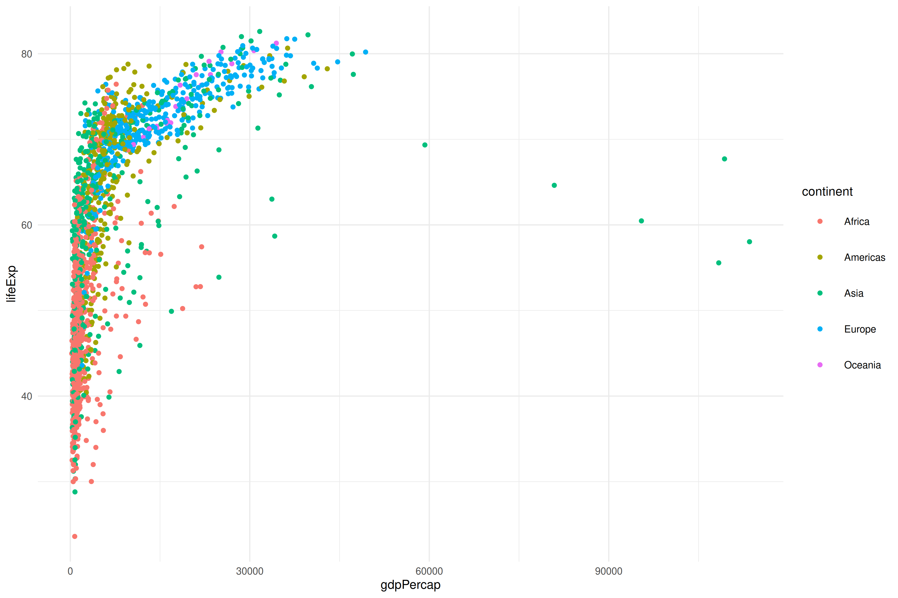
Color en función de la variable ‘continent’. Cambiamos el tamaño de los puntos a 2. Añadimos transparencia usando el parámetro ‘alpha’.
ggplot(gapminder, aes(gdpPercap, lifeExp,
color = continent,
size = 2,
alpha = .1)) +
geom_point()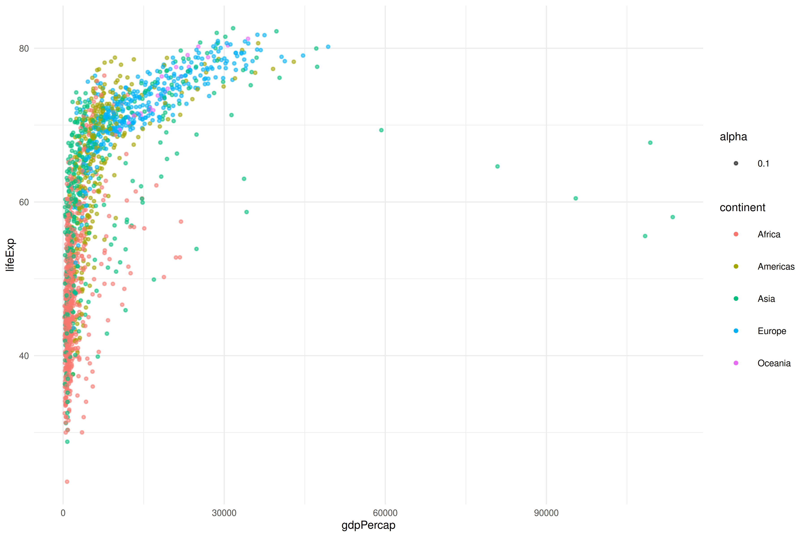
Ejercicios
Usando como base el plot siguiente (GDP x población):
ggplot(gapminder, aes(gdpPercap, pop)) +
geom_point()¿Podrías hacer lo siguiente?:
- Colorear los puntos por continente
- Tamaño del punto 4
- Alpha 0.5
Cada uno de los siguientes gráficos tiene un error. ¿Sabrías corregirlos?
ggplot(gapminder, aes(gdpPercap, pop), color = continent) +
geom_point(size = 4, alpha = .5)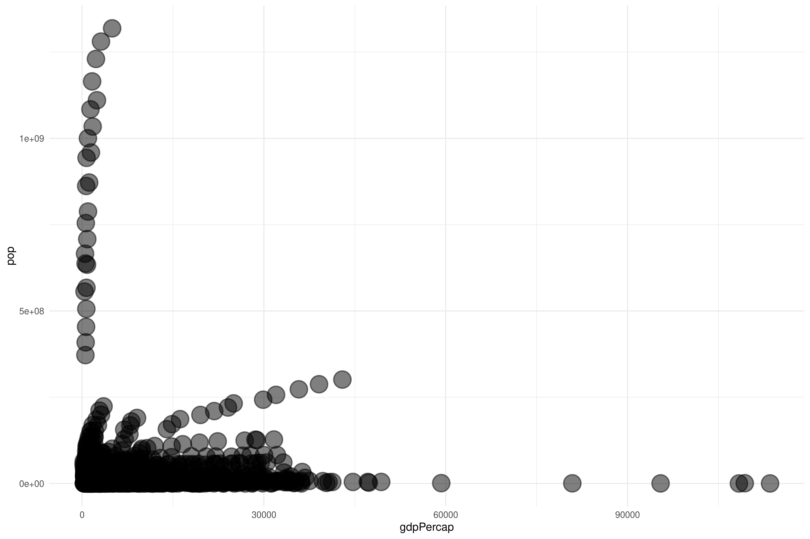
Solución
color = continent debe ir dentro de aes()
ggplot(gapminder, aes(gdpPercap, pop, color = "blue")) +
geom_point(size = 4, alpha = .5)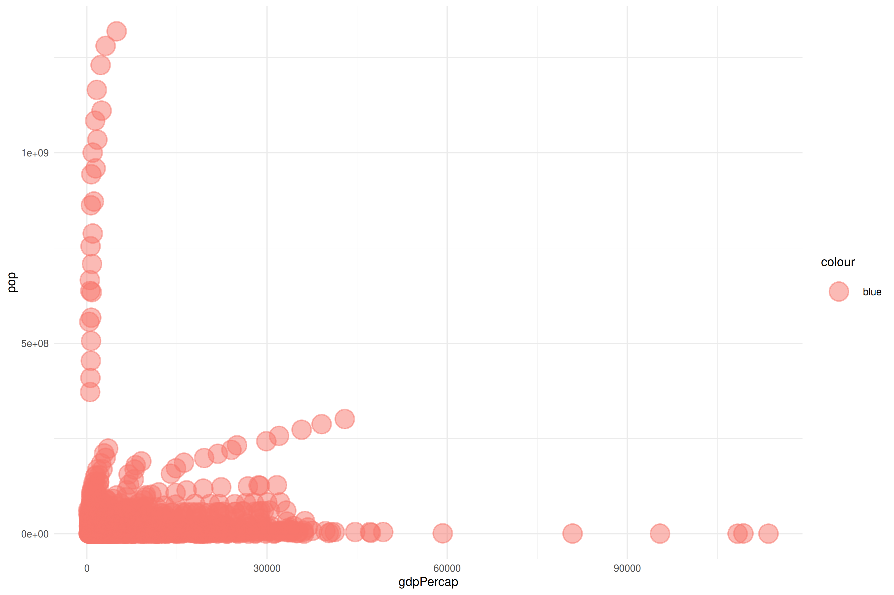
Solución
color = “blue” debe ir fuera de aes()
2.2.3.3 Shape
Códigos para las distintas formas

En este ejemplo usamos la variable continent para asignar una forma diferente a cada uno de los continentes.
ggplot(gapminder, aes(gdpPercap, lifeExp, shape = continent)) +
geom_point() 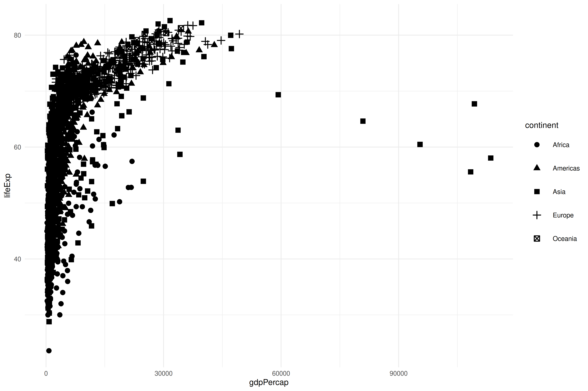
2.2.3.4 Linetype
Códigos para los distintos estilos de linea

Podemos definir directamente el tipo de línea que queremos en geom_line():
ggplot(gapminder, aes(year, lifeExp, color = continent)) +
stat_summary(fun = mean, geom = "line", linetype = "dashed")O que el tipo de línea dependa de una variable:
ggplot(gapminder, aes(year, lifeExp, linetype = continent, color = continent)) +
stat_summary(fun = mean, geom = "line") 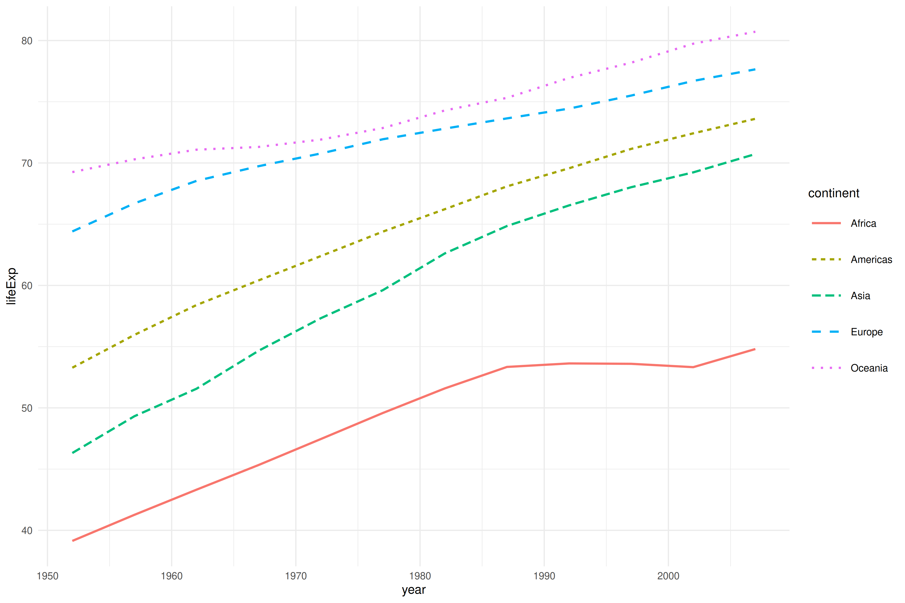
2.2.4 Geoms
Una de las cosas más difíciles cuando nos enfrentamos a nuevos datos es elegir el método más efectivo para visualizarlos. Hay varios recursos interesantes sobre cómo elegir una gráfica. Personalmente, para encontrar inspiración, la r graph gallery me parece un recurso fantástico.
En esta sección veremos distintos tipos de geometría, o geoms_().
Algunos tipos de geoms
Para una lista exhaustiva ver el manual de ggplot2.

2.2.4.1 geom_point y geom_jitter
Si queremos un gráfico de dispersión o scatterplot, podemos usar el geom_point()
ggplot(mpg, aes(displ, hwy)) +
geom_point()
En algunos casos, tenemos muchos puntos que se superponen. Si usamos geom_jitter() la posición de los puntos cambia levemente de manera aleatoria para evitar superposiciones. Con las propiedades ´width´ y ´height´ podemos controlar el desplazamiento horizontal y vertical máximo.
ggplot(mpg, aes(displ, hwy)) +
geom_jitter()2.2.4.2 geom_smooth
Podemos añadir líneas de tendencia con geom_smooth(). El method por defecto es loess, pero podemos usar otros métodos (e.g. geom_smooth(method = "lm") para usar una regresión lineal).
Recuerda que las funciones que usamos (todo lo que contiene () e.g. geom_smooth()) tienen parámetros, que son instrucciones adicionales que nos permiten modificar como se comportan. Para ver que opciones tenemos, podemos ver la ayuda de las funciones : ?geom_smooth(), o poner el cursor encima y presionar F1 (ayuda).
# Linea de tendencia (default loess)
ggplot(gapminder, aes(gdpPercap, lifeExp)) +
geom_point() +
geom_smooth()
Usamos “lm”.
ggplot(gapminder, aes(gdpPercap, lifeExp)) +
geom_point() +
geom_smooth(method = "lm")
Un smooth por cada color (continent).
ggplot(gapminder, aes(gdpPercap, lifeExp, color = continent)) +
geom_point() +
geom_smooth()
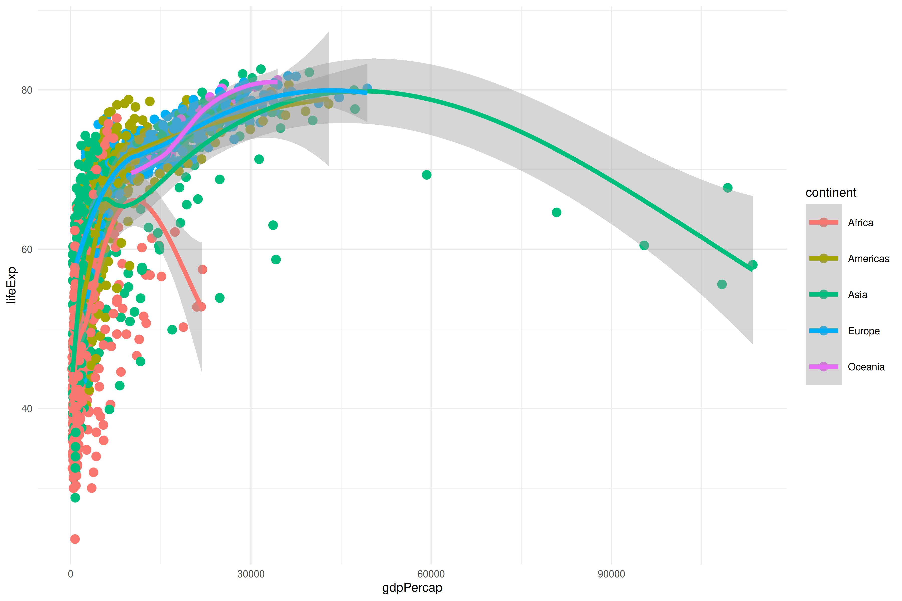
Coloreamos puntos pero mantenemos un solo smooth introduciendo el parámetro aes(color = continent) dentro de geom_point().
ggplot(gapminder, aes(gdpPercap, lifeExp)) +
geom_point(aes(color = continent)) +
geom_smooth()
Ejercicios
Usando como base el siguiente plot:
ggplot(gapminder, aes(gdpPercap, lifeExp, shape = continent)) +
geom_point()- Colorea los puntos por continente
- Muestra una línea de tendencia por continente (sin el intervalo de confianza)
- Haz que el tipo de línea cambie por continente
- Añade transparencia a los puntos para que las líneas destaquen
Solución
- parámetro
color
- geom
geom_smooth, parámetrose
- parámetro
linetype
- parámetro
alphadentro degeom_point
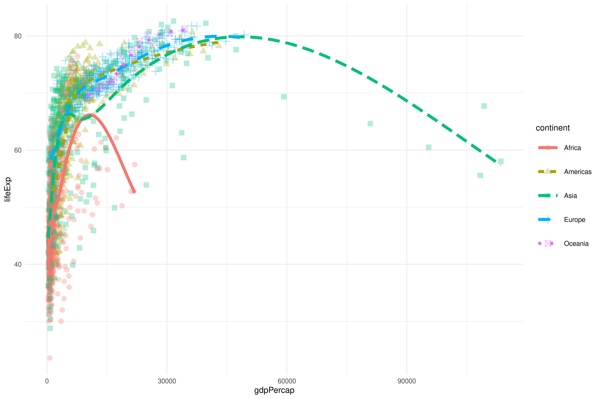
Ahora vamos a usar el data frame mpg. Empieza con este plot:
ggplot(mpg, aes(displ, hwy)) +
geom_point() +
theme_grey()Finalmente, intenta crear los siguientes 6 plots. Te recomiendo avanzar en orden alfabètico.
Para conseguirlo vamos a tener que usar parámetros como group, color o linetype, pensando muy bien si los tenemos que poner en el aes() general, o en un aes() dentro de geoms específicos:
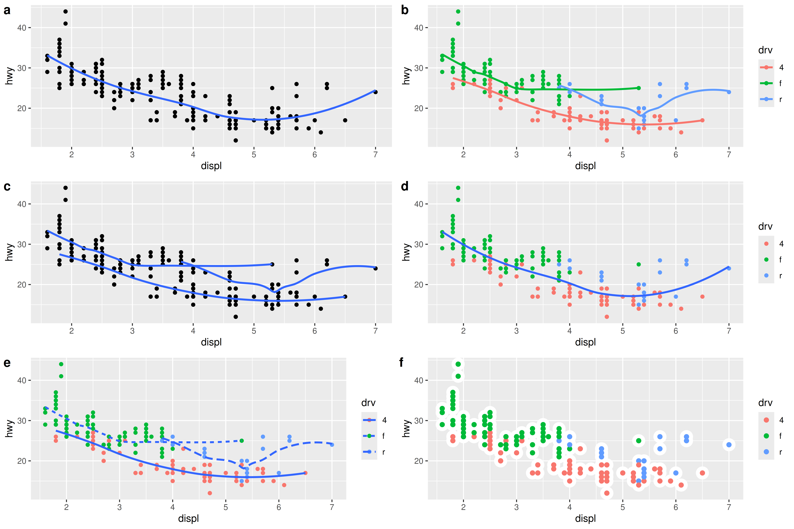
2.2.4.3 geom_boxplot y geom_violin
Podemos crear diagramas de cajas (boxplots) con geom_boxplot o violines con geom_violin para visualizar como cambian los datos por grupo.
Boxplot con relleno (parámetro fill).
ggplot(gapminder, aes(continent, lifeExp, fill = continent)) +
geom_boxplot(alpha = .2)Los violin plots nos permiten ver la distribución de los datos. Podemos usar el parámetro draw_quantiles para dibujar quantiles, por ejemplo, el percentil 50 (la mediana). Si queremos mostrar los percentiles 25, 50 y 75, tenemos que usar draw_quantiles = c(.25, .5, .75).
ggplot(gapminder, aes(continent, lifeExp, fill = continent)) +
geom_violin(alpha = .2, draw_quantiles = .5)Podemos combinar geom_violin con geom_jitter para mostrar las observaciones individuales. Si usamos height = 0 y width = .2, los puntos mostraran el valor exacto de lifeExp, y se dispersarán algo en el eje horizontal.
ggplot(gapminder, aes(continent, lifeExp)) +
geom_violin(alpha = .2, aes(fill = continent), draw_quantiles = .5) +
geom_jitter(alpha = .1, height = 0, width = .2)2.2.4.4 geom_histogram y geom_bar
Cuando queremos visualizar la distribución de variables continuas, podemos usar histogramas (geom_histogram()). Como puedes ver, ahora solo le pasamos una variable a aes() (el eje y muestra el número de observaciones, y es calculado por ggplot).
ggplot(gapminder, aes(lifeExp)) +
geom_histogram()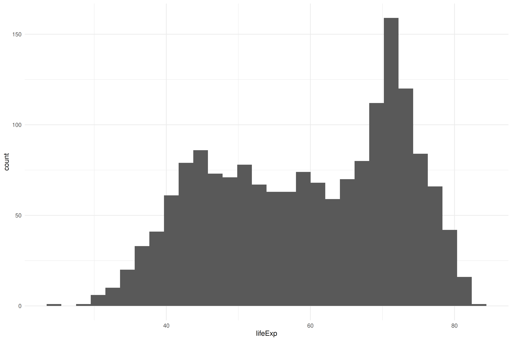
Si tenemos variables categóricas, usamos geom_bar(). Podemos usar guides(fill = "none") para que desaparezca la leyenda asociada al color, porque los nombres de cada categoría ya aparecen en el eje x:
2.2.4.5 geom_density
Para visualizar distribuciones cuando tenemos muchos datos, podemos usar geom_density(). Eso sí, recuerda que con pocos datos, los gráficos de densidad nos dan una falsa seguridad sobre la forma de nuestra distribución.
Usamos el parámetro alpha = .2 para añadir transparencia y ver todas las distribuciones. Puedes probar cambiando su valor a 1, para ver que ocurre (alpha puede tener valores de 0 a 1).
ggplot(gapminder, aes(lifeExp, fill = continent)) +
geom_density(alpha = .2)
Ejercicio
Añadiendo un parámetro a la gráfica de arriba, podemos transformarla en las versiones de abajo. ¿Podrías hacerlo? (recuerda que poniéndote encima de geom_density() y tecleando F1 puedes ver la ayuda de la función).
ggplot(gapminder, aes(lifeExp, fill = continent)) +
geom_density(alpha = .2)
Solución
position = "stack" y position = "fill".


2.2.4.6 geom_density_ridges
Uno de mis geoms favoritos para comparar distribuciones es geom_density_ridges:
ggplot(gapminder, aes(lifeExp, continent, fill = continent)) +
ggridges::geom_density_ridges(alpha = .2)
Especialmente porque podemos incluir en el mismo gráfico información sobre distribuciones y puntos individuales.
ggplot(gapminder, aes(lifeExp, continent, fill = continent)) +
ggridges::geom_density_ridges(
stat = "binline",
bins = 20,
scale = 0.95,
draw_baseline = FALSE
) +
ggridges::geom_density_ridges(
jittered_points = TRUE,
position = "raincloud",
alpha = 0.7,
scale = 0.9,
quantile_lines = TRUE,
quantile_fun = mean
) +
theme(legend.position = "none") +
scale_x_continuous(n.breaks = 10) +
labs(caption = "vertical lines represent the mean lifeExp per continent")
Ejercicios
Usando como base el plot de la sección geom_histogram():
ggplot(gapminder, aes(lifeExp)) +
geom_histogram()Colorea los histogramas por continente
Sabrías hacer que no se amontonen unos continentes sobre otros? Necesitarás añadir transparencia para ver todos los datos
Solución
geom_histogram(position = "identity", alpha = .3).


2.2.5 Personalización básica
Una gráfica necesita elementos como el título, ejes con nombres informativos, etc. Usaremos la función labs() para incluir o editar lo siguiente:
-
title: título de la gráfica
-
subtitle: subtítulo
-
caption: pie de gráfica (abajo a la derecha)
-
tag: etiqueta de la gráfica (arriba a la izquierda)
-
x: eje horizontal
-
y: eje vertical
-
fill: título de leyenda si se usa el parámetrofill
-
color: título de leyenda si se usa el parámetrocolor
-
alt: alt-text, importante para que los lectores de pantalla usados por personas ciegas describan las gráficas
En el siguiente ejemplo, vamos a personalizar la gráfica del ejercicio anterior:
ggplot(gapminder, aes(lifeExp, fill = continent)) +
geom_histogram(position = "identity", alpha = .3) +
labs(title = "Distribution of life expectancy",
subtitle = "by continent",
caption = "Source, the gapminder dataset",
tag = "a)",
x = "Life expectancy (in years)",
y = "Number of observations (countries, years)",
fill = "Continent",
alt = "Alt text for the plot. Very useful for blind people"
)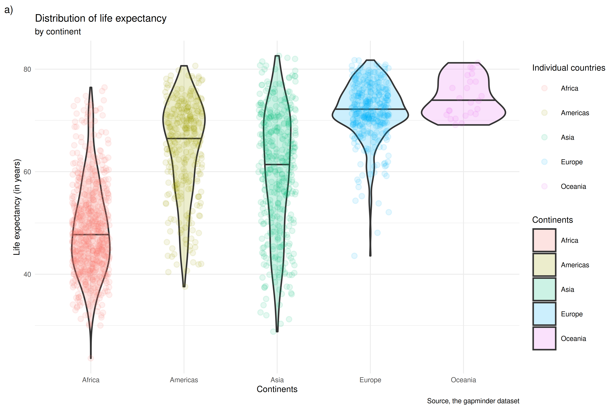
Ejercicio
Usando como base este plot:
ggplot(mpg, aes(displ, hwy)) +
geom_point() +
geom_smooth(se = FALSE) +
theme_grey()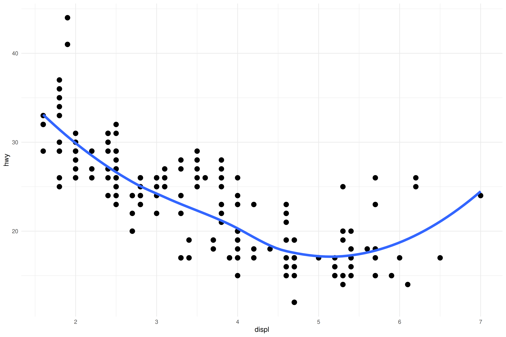
Personalízalo añadiendo y modificando:
- título
- subtítulo
- caption
- ejes x e y
Para conseguir esto:
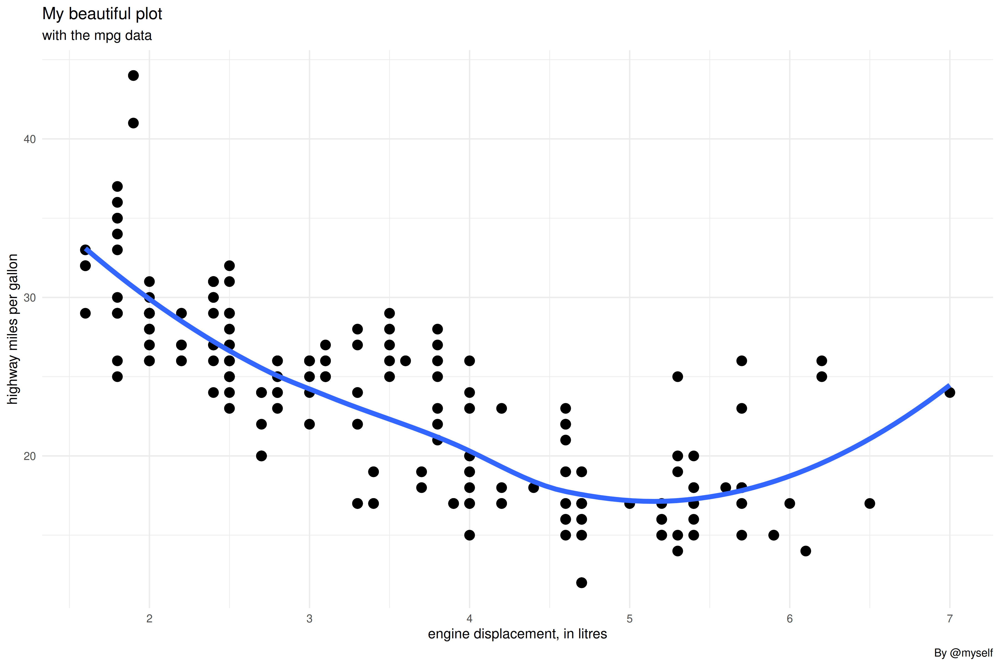
Con lo que hemos visto en este capítulo, podrás crear una gran cantidad de gráficas. En el siguiente capítulo veremos algunas funcionalidades más avanzadas.
Bibliografía
Matejka, J., & Fitzmaurice, G. (2017, May). Same stats, different graphs: Generating datasets with varied appearance and identical statistics through simulated annealing. In Proceedings of the 2017 CHI Conference on Human Factors in Computing Systems (pp. 1290-1294). ACM.
https://bbc.github.io/rcookbook/
https://github.com/bbc/bbplot
https://github.com/dreamRs/esquisse
Garrick Aden-Buie. A Gentle Guide to the Grammar of Graphics with ggplot2: https://github.com/gadenbuie/gentle-ggplot2
Michael Toth. You Need to Start Branding Your Graphs. Here’s How, with ggplot!: https://michaeltoth.me/you-need-to-start-branding-your-graphs-heres-how-with-ggplot.html
Claus Wilke: https://wilkelab.org/practicalgg/
-
Thomas Lin Pedersen:
- Part 1: https://www.youtube.com/watch?v=h29g21z0a68
- Part 2: https://www.youtube.com/watch?v=0m4yywqNPVY
Big Book or R : https://www.bigbookofr.com/index.html